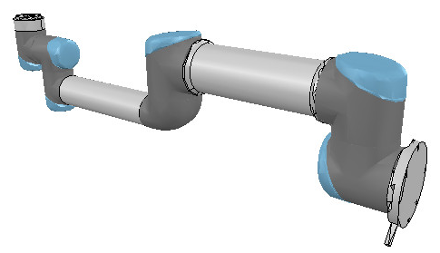
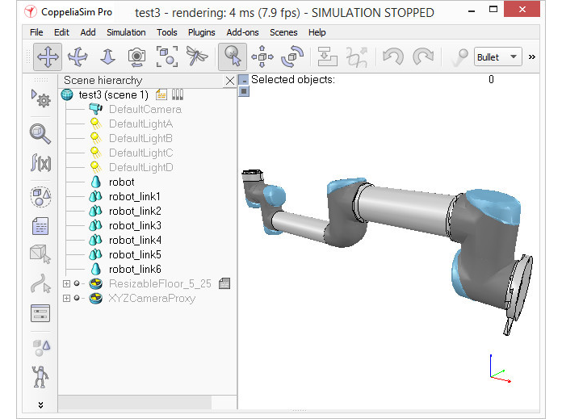
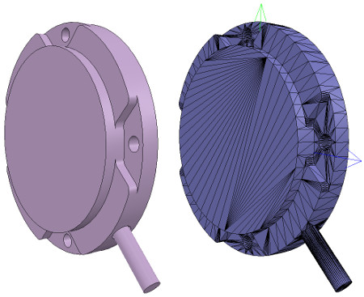
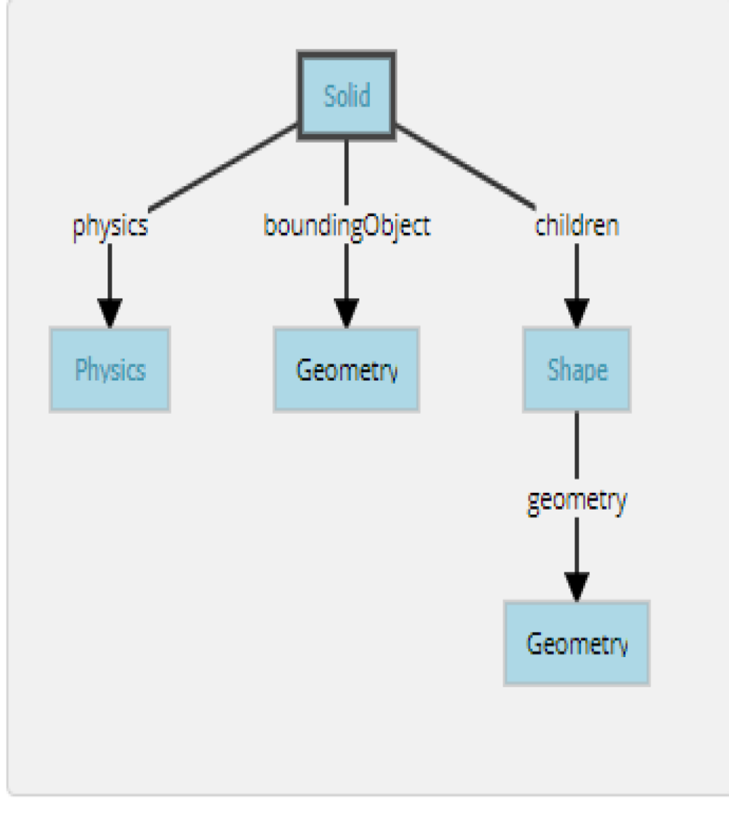

week10-14 <<
Previous Next >> Note
week15-18
Week15
個人學習回報
心得:在這學期我學到的很多全新的東西，像是Solvespace編譯以及操作，也花了很多時間去學習這個軟體，也學到了Webots、SSH、V-rep，但是還沒有很熟練，希望能盡快學會這些軟體。
Week16
越野車零組件設計繪圖查驗
心得:這次使用solvespace繪製越野車零件便組裝，由於不是很熟練所以花了很多時間去繪圖，並且轉v-rep及webots，但是時間不夠所以沒做完，所以回去會加緊練習並補齊進度的!
Week17
1.根據分配內容翻譯
1.http://www.coppeliarobotics.com/helpFiles/en/buildingAModelTutorial.htm
We end up with 17 individual shapes:
我們最終得到17個單獨的形狀：

[Adjusted visual attributes]
[調整後的視覺屬性]
Now we can group the shapes that are part of the same link with [Menu bar --> Edit --> Grouping/merging -> Group selected shapes]. We end up with 7 shapes: the base of the robot (or base of the robot's hierarchy tree), and 6 mobile links. It is also important to correctly name your objects: you we do this with a double-click on the object name in the scene hierarchy. The base should always be the robot or model name, and the other objects should always contain the base object name, like: robot (base), robot_link1, robot_proximitySensor, etc. By defaut, shapes will be assigned to visibility layer 1, but can be changed in the object common properties. By default, only visibility layers 1-8 are activated for the scene. We now have following (the model ResizableFloor_5_25 was temporarily made invisible in the model properties dialog):
現在，我們可以使用[菜單欄->編輯->分組/合併->分組所選形狀]對屬於同一鏈接的形狀進行分組。 我們最終得到7個形狀：機器人的基礎（或機器人的層次結構樹的基礎）和6個移動鏈接。 正確命名對像也很重要：您可以通過雙擊場景層次結構中的對象名稱來做到這一點。 基礎應始終是機械手或模型名稱，其他對象應始終包含基礎對象名稱，例如：robot（基礎），robot_link1，robot_proximitySensor等。通過默認，形狀將分配給可見性層1，但可以 在對象通用屬性中進行更改。 默認情況下，僅激活場景的可見性層1-8。 現在，我們有了以下內容（模型ResizableFloor_5_25模型在模型屬性對話框中暫時不可見）：

[Individual elements compositn the robot]
[構成機器人的各個要素]
When a shape is created or modified, CoppeliaSim will automatically set its reference frame position and orientation. A shape's reference frame will always be positioned at the shape's geometric center. The frame orientation will be selected so that the shape's bounding box remains as small as possible. This does not always look nice, but we can always reorient a shape's reference frame at any time. We now reorient the reference frames of all our created shapes with [Menu bar --> Edit --> Reorient bounding box --> with reference frame of world]. You have more options to reorient a reference frame in the shape geometry dialog.
創建或修改形狀時，CoppeliaSim將自動設置其參考框架的位置和方向。 形狀的參考框架將始終位於形狀的幾何中心。 將選擇框架方向，以便形狀的邊界框保持盡可能小。 這並不總是看起來不錯，但是我們隨時可以隨時調整形狀的參考框架的方向。 現在，我們可以使用[菜單欄->編輯->重定向邊界框->使用世界參考框架]重新調整所有已創建形狀的參考框架。 您有更多選項可以在形狀幾何對話框中重新定向參考框架。
Building the joints
Now we will take care of the joints/motors. Most of the time, we know the exact position and orientation of each of the joints. In that case, we simply add the joints with [Menu bar --> Add --> Joints --> ...], then we can change their position and orientation with the position dialog and orientation dialog. In other situations, we only have the Denavit-Hartenberg (i.e. D-H) parameters. In that case, we can build our joints via the tool model located in Models/tools/Denavit-Hartenberg joint creator.ttm, in the model browser. Othertimes, we have no information about the joint locations and orientations. Then, we need to extract them from the imported mesh. Let's suppose this is our case. Instead of working on the modified, more approximate mesh, we open a new scene, and import the original CAD data again. Most of the time, we can extract meshes or primitive shapes from the original mesh. The first step is to subdivide the original mesh. If that does not work, we do it via the triangle edit mode. Let's suppose that we could divide the original mesh. We now have smaller objects that we can inspect. We are looking for revolute shapes, that could be used as reference to create joints at their locations, with the same orientation. First, remove all objects that are not needed. It is sometimes also useful to work across several opened scenes, for easier visualization/manipulation. In our case, we focus first on the base of the robot: it contains a cylinder that has the correct position for the first joint. In the triangle edit mode, we have:
建立關節
現在，我們將照顧關節/馬達。大多數時候，我們知道每個關節的確切位置和方向。在這種情況下，我們只需使用[菜單欄->添加->關節-> ...]添加關節，然後可以使用位置對話框和方向對話框更改它們的位置和方向。在其他情況下，我們只有Denavit-Hartenberg（即D-H）參數。在這種情況下，我們可以通過模型瀏覽器中位於Models / tools / Denavit-Hartenberg聯合creator.ttm中的工具模型來構建關節。有時，我們沒有關於關節位置和方向的信息。然後，我們需要從導入的網格中提取它們。讓我們假設這是我們的情況。無需處理修改過的，更近似的網格，而是打開一個新場景，然後再次導入原始CAD數據。大多數時候，我們可以從原始網格中提取網格或基本形狀。第一步是細分原始網格。如果那不起作用，我們將通過三角形編輯模式進行操作。假設我們可以劃分原始網格。現在，我們可以檢查較小的對象。我們正在尋找旋轉形狀，可以用作在其位置以相同方向創建關節的參考。首先，刪除所有不需要的對象。有時在多個打開的場景中工作也很有用，以便於可視化/操作。在我們的案例中，我們首先關注機器人的基座：它包含一個圓柱體，該圓柱體的第一個關節的位置正確。在三角形編輯模式下，我們有：

[Robot base: normal and triangle edit mode visualization]
[機器人基礎：法線和三角形編輯模式可視化]
2.https://cyberbotics.com/doc/guide/tutorial-2-modification-of-the-environment
A Solid node represents a rigid body, that is a body in which deformation can be neglected. The distance between any two given points of a rigid body remains constant in time regardless of external forces exerted on it. For example a table, a robot finger phalanx or a wheel are rigid bodies. Soft bodies and articulated objects are not rigid bodies. For example, a rope, a tire, a sponge or an articulated robot arm are not rigid bodies. However, an articulated entity can be broken into several rigid bodies.
The physics engine of Webots is designed for simulating rigid bodies only. An important step, when designing a simulation, is to break up the various entities into separate rigid bodies.
To define a rigid body, you will have to create a Solid node. Inside this node you will set up different sub-nodes corresponding to the characteristics of the rigid body. The following figure depicts a rigid body and its sub-nodes. The graphical representation of the Solid node is defined by the Shape nodes populating its children list. The collision bounds are defined in its boundingObject field. The graphical representation and the collision shape are often but not necessarily identical. Finally, the physics field defines if the object belongs to the dynamical or to the static environment. All these sub-nodes are optional, but the physics field needs the boundingObject to be defined.
實體節點表示剛體，即可以忽略變形的剛體。剛體上任意兩個給定點之間的距離在時間上保持恆定，而不管施加在其上的外力如何。例如，桌子，機械手指骨或輪子是剛體。軟體和關節物體不是剛體。例如，繩索，輪胎，海綿或關節式機械臂不是剛性體。但是，可以將一個鉸接的實體分解為幾個剛體。
Webots的物理引擎僅設計用於模擬剛體。設計仿真時，重要的一步是將各個實體分解為單獨的剛體。
要定義剛體，您將必須創建一個實體節點。在此節點內，您將根據剛體的特性設置不同的子節點。下圖描繪了剛體及其子節點。實體節點的圖形表示由填充其子級列表的Shape節點定義。碰撞範圍在其boundingObject字段中定義。圖形表示和碰撞形狀通常但不一定相同。最後，物理字段定義對像是屬於動態環境還是屬於靜態環境。所有這些子節點都是可選的，但物理場需要定義boundingObject。

The simplest model of a rigid body in Webots having a graphical representation, a physical bounding object and being in the dynamical environment.
Webots中剛體的最簡單模型，具有圖形表示，物理邊界對象並且處於動態環境中。
The Geometry box (in this figure) stands for any kind of geometrical primitive. In fact, it can be substituted by a Sphere, a Box, a Cylinder, etc.
幾何框（在此圖中）代表任何類型的幾何圖元。 實際上，它可以用球體，盒子，圓柱體等代替。
2.越野車模擬
個人操作影片
week18
week10-14 <<
Previous Next >> Note